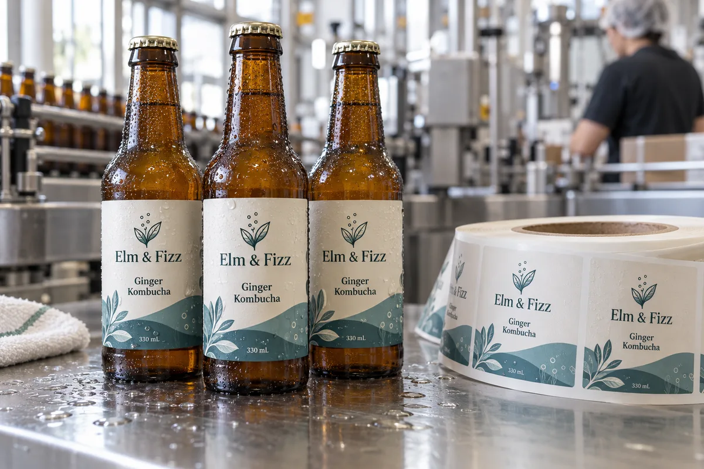

Ask when the label meets the bottle
For refrigerated kombucha, I would not start with a material swatch. I would ask whether the bottles are labeled dry before chilling or cold after condensation has formed. Those are different jobs. A film that holds after a dry application may still fail if the line puts it directly onto water droplets.
A composite co-packer fills amber glass, caps it and moves bottles into a cold room. One brand labels before that transfer; another labels on the way out. The first needs wet-service durability. The second also needs the plant to control the surface at application. I would not promise that one adhesive solves both without a trial.
Condensation is a process problem as well as a stock problem
Avery Dennison's technical discussion of pressure-sensitive labels and water recommends applying labels to dry glass after condensation is removed and testing materials under actual end-use conditions. That is a stronger starting point than asking for a vaguely "waterproof" sticker.
I would record bottle temperature, room humidity, visible moisture, wipe-down pressure and the time from filling to application. If a bottle is dripping at the applicator, fix that step before comparing expensive face films.
Design for the actual amber bottle
Dark glass can make a clear label look quieter in a mockup than it will in the fridge. White ink or an opaque face may be needed for contrast; check the printed proof on the filled bottle. Keep the label on the regular cylindrical wall, away from shoulder transitions and embossed areas. If a wrap is desired, measure the filled bottle and agree the seam gap before artwork approval.
I would also ask where lot and date information is printed. A separate variable-data area can keep the brand artwork consistent while giving the co-packer a reliable coding target.
The buying test that matters
Apply the proposed roll to actual bottles at the intended line speed. Check edge lift immediately, after refrigeration and after wet-handling cycles that mirror distribution. Compare readability and rub resistance after the bottle is damp. Photograph the same bottle at each stage; a single dramatic ice-bucket shot is not a test protocol.
For a quote, send bottle photos, diameter, label dimensions, storage range, application point, applicator model, roll direction and artwork. If you cannot tell us whether the bottle is dry at application, that is the first production question to settle.
Our buying view
What we would decide first
Separate the dry application step from later refrigerated service. A real production sample can settle that question before a full printed roll is ordered.
Related buyer guides
Frequently asked questions
Can a waterproof label be applied to wet glass?
Not automatically. Water on the application surface can interfere with initial contact; trial the exact construction on dry and wet bottles.
Is clear film always best for amber kombucha bottles?
No. Check contrast on the filled bottle; a white or opaque face may be more readable.
Review your label specification
Send the real package, dimensions, order quantity, labeling stage, storage conditions and artwork. We can discuss a practical material and proof route.